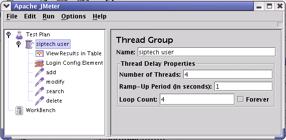
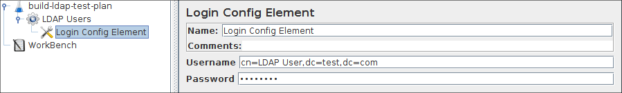
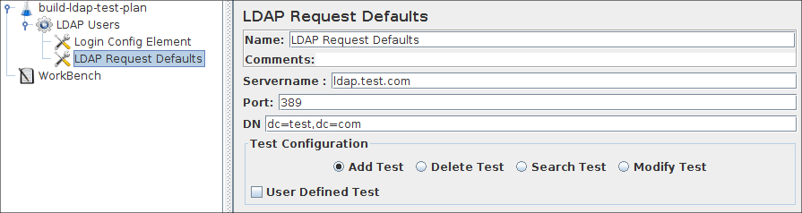
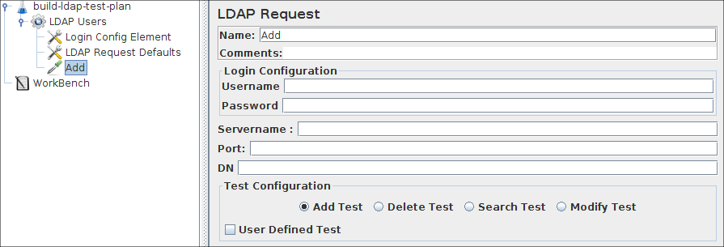
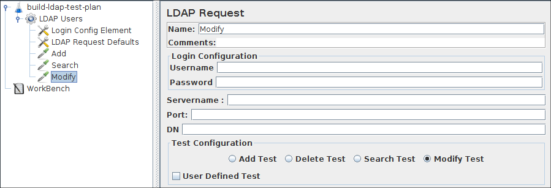
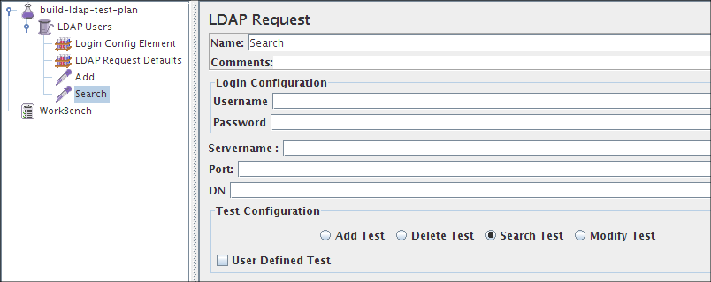
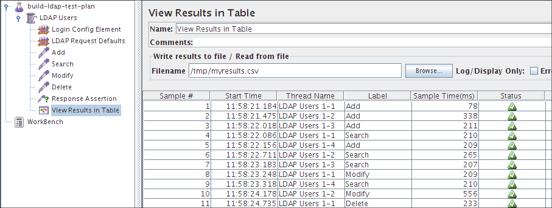

|
About
Download
Documentation
Tutorials (PDF format)
Community
Foundation
|
|
9a. Building an LDAP Test Plan¶
|
In this section, you will learn how to create a basic Test Plan to test an LDAP server.
You will create four users that send requests for four tests on the LDAP server.Also, you will tell
the users to run their tests twice. So, the total number of requests is (4 users) x (4 requests) x
repeat 2 times) = 32 LDAP requests. To construct the Test Plan, you will use the following elements:
Thread Group
,
LDAP Request
,
LDAP Request Defaults
, and
View Results in Table
.
This example assumes that the LDAP Server is installed in your Local machine.
|
|
|
9a.1 Adding Users¶
|
The first step you want to do with every JMeter Test Plan is to add a Thread Group element.
The Thread Group tells JMeter the number of users you want to simulate, how often the users should send
requests, and the how many requests they should send.
Go ahead and add the ThreadGroup element by first selecting the Test Plan, clicking your
right mouse button to get the Add menu, and then select Add-->ThreadGroup. You should now see the
Thread Group element under Test Plan. If you do not see the element, then "expand" the Test Plan tree by
clicking on the Test Plan element.

Figure 9a.1. Thread Group with Default Values
|
|
|
|
9a.2 Adding Login Config Element¶
|
Begin by selecting the Siptech Users element. Click your right mouse
button to get the Add menu, and then select Add --> Config Element --> Login Config Element.
Then, select this new element to view its Control Panel.
Like most JMeter elements, the Login Config Element Control Panel has a name
field that you can modify. In this example, leave this field with the default value.

Figure 9a.2 Login Config Element for our Test Plan
|
Enter Username field to "your Server Username",
The password field to "your Server Passowrd"
These values are default for the LDAP Requests.
|
|
|
|
9a.3 Adding LDAP Request Defaults¶
|
Begin by selecting the Siptech Users element. Click your right mouse button
to get the Add menu, and then select Add --> Config Element -->LDAP Request Defaults. Then,
select this new element to view its Control Panel.
Like most JMeter elements, the LDAP Request Defaults Control Panel has a name
field that you can modify. In this example, leave this field with the default value.

Figure 9a.3 LDAP Defaults for our Test Plan
|
Enter DN field to "your Server Root Dn".
Enter LDAP Server's Servername field to "localhost".
The port to 389.
These values are default for the LDAP Requests.
|
|
|
|
9a.4 Adding LDAP Requests¶
|
In our Test Plan, we need to make four LDAP requests.
-
Inbuilt Add Test
-
Inbuilt Modify Test
-
Inbuilt Delete Test
-
Inbuilt Search Test
JMeter sends requests in the order that you add them to the tree.
Start by adding the first LDAP Request to the Siptech Users element (Add -->
Sampler --> LDAP Request). Then, select the LDAP Request element in the tree
and edit the following properties
-
Change the Name to "Inbuilt-Add Test".
-
Select the Add test Radio button

Figure 9a.4.1 LDAP Request for Inbuilt Add test
|
You do not have to set the Server Name field, port field, Username, Password
and DN because you already specified this value in the Login Config Element and
LDAP Request Defaults.
Next, add the second LDAP Request and edit the following
properties
-
Change the Name to "Inbuilt-Modify Test".
-
Select the Modify test Radio button

Figure 9a.4.2 LDAP Request for Inbuilt Modify test
|
-
Change the Name to "Inbuilt-Delete Test".
-
Select the Delete test Radio button

Figure 9a.4.3 LDAP Request for Inbuilt Delete test
|
-
Change the Name to "Inbuilt-Search Test".
-
Select the Search test Radio button

Figure 9a.4.4 LDAP Request for Inbuilt Search test
|
|
|
|
9a.5 Adding a Listener to View/Store the Test Results¶
|
The final element you need to add to your Test Plan is a Listener.
This element is responsible for storing all of the results of your LDAP
requests in a file and presenting a visual model of the data.Select the Siptech
Users element and add a View Results in Table (Add --> Listener -->View Results in Table)

Figure 9a.5 View result in Table Listener
|
|
|
|